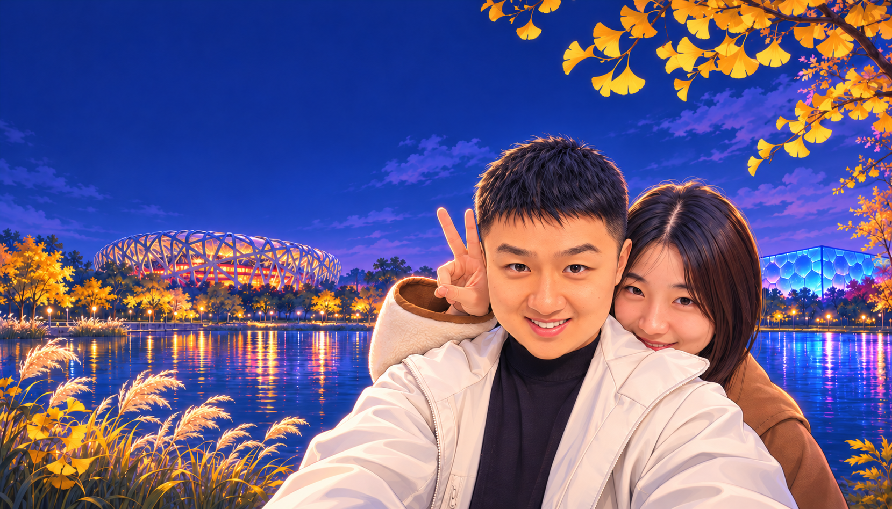

10:00前后
P南门东侧停车，步行接南门
导航到已核对的南门东侧停车场入口，拍下车位后沿入口侧道路步行到南门。停车接入另留10–15分钟左右，不把这段算进3.6公里环线。

2026.11.07 · 北京奥林匹克森林公园
南门入园后顺时针走：南岸 → 西岸银杏 → 北岸山水 → 东岸 → 南门，参考现成约3.6公里环线。环湖尽量不折返，只有停车场与南门的短接入段重复；下午两馆只看外观。
导航到已核对的南门东侧停车场入口，拍下车位后沿入口侧道路步行到南门。停车接入另留10–15分钟左右，不把这段算进3.6公里环线。

从南门入园，到南岸先看看开阔湖面，再沿环湖步道往西走。今天选的是现成约3.6公里奥海环线，一圈回到南门，尽量不折返。
怎么走 南门 → 南岸 → 西岸。沿湖继续前进，不另加往返支线。
怎么拍 手机横过来，用1倍把人和湖都装进画面；风小有倒影时慢慢选个位置。

边走边看湖岸的树色，找到银杏与落叶舒服的位置就停下来拍。不追某一棵树的“标准机位”，现场哪里好看就在哪里多留一会儿。
怎么走 从南岸接西岸，再顺环线向北岸走；本轮不绕去园外入口或深处小景点。
怎么拍 一人慢走，另一人退几步拍全身；合照可用定时拍摄。资料图不代表当天叶况。

在北岸看山水与树木的层次，沿平缓湖岸慢慢走。把上午留给这一圈，不加登山段，也不为额外景点来回绕路。
怎么走 西岸 → 北岸 → 东岸，始终沿环线向前走；遇路牌以“环湖步道”和南门方向为准。
怎么拍 让近处树枝或岸线引向湖面，人放在画面一侧，拍出环境与人物的关系。
沿东岸往南走，看到喜欢的水边位置再短停。接回南岸与南门后，环湖的一圈就完成了，不再反向走一遍。
怎么走 东岸 → 南岸 → 南门。环线尽量不重复，停车场与南门的短接入段需要来回走。
怎么拍 用岸线做画面的前景，拍一张收尾合照；时间晚了就少停几个点，走回南门。
完成环线后，经南门走回东侧停车点。把步行、找车与出库留在12:30–12:45这一段；如果拍照多、走得慢，午饭相应顺延。
金鼎轩在北辰荟B座3层L320B/L321，可先吃热饭；Grid Coffee在1层L115、南门附近。午餐留到14:15左右，把补水、洗手间与充电一起解决。

午餐后还有兴致、雨不大，再从北辰荟南门步行去水立方和鸟巢。两馆各看20–30分钟；连同往返，约15:00–17:00。只在外侧散步拍照。
环湖含散步拍照约2–2.5小时，停车接入另留步行。时间是建议节奏，可跟着体力与雨势调整。景点资料照片不代表11月7日实时叶况，鸟巢夜景也不承诺当天同样亮灯。
午饭后不用为了凑满一天继续赶路。想看地标走A，想舒服一点就选B；这两种都能完整结束今天。
金鼎轩：北辰荟B座3层L320B / L321。官网时段07:30–22:00，电话010-60991925。若等位久，就在同层选热食，不另开车找饭。
Grid Coffee：1层L115，南门附近。可以饭后买一杯，也可以外观散步回来再坐。当天门店营业与等位情况到店前再看。
导航到奥林匹克森林公园南门东侧停车场入口，高德POI已核对。停车后向西步行接南门，入园后再接奥海环线。
官网小型车标准1元/10分钟。按约2.5–3小时停留预留停车预算15–18元；实际以入口公示、入出场时间计费。
本次停车点已改为南门东侧；旧记录请重新核对并更新，也建议拍照。
导航到南门东侧停车 ↗北辰西路6号院。中午挪一次车，下午从商场南门步行出发，也回同一商场取车。
费用与消费抵扣看当天公示。鸟巢地下停车场当天关闭。回来走商场步行入口，不走机动车坡道。
两次停车分别保存，不互相覆盖。
导航到北辰荟车库 ↗园区散步免费、普通入园无需预约。本次两馆只看外观，预算只计停车与餐饮。
出门前再看一次朝阳区天气及目的停车入口；下午雨大就按Plan B提早收尾。
整理与核对日期：2026年11月6日。本页复用真实地图与现成游览资料，再按自驾取车调整；步行时段是建议预留，不是实测到达时间。天气、车位、围挡和场馆当天项目请在出发时再确认。
上午直接采用Pacer约3.6公里环湖原路线与底图，S为路线起终点而非园门；停车场经南门的接入步行单独计算，短接入段需要往返。下午全景图只用于判断建筑外围走向，各点用高德导航定位。封面按你提供的合照卡通化，背景为奥森、鸟巢、水立方组合插画。